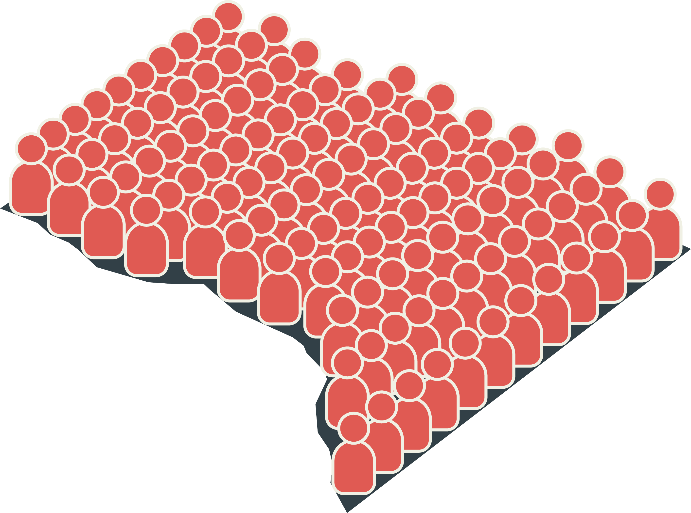
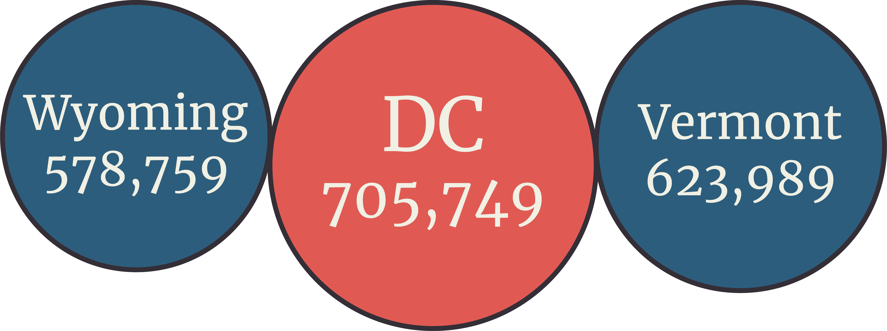
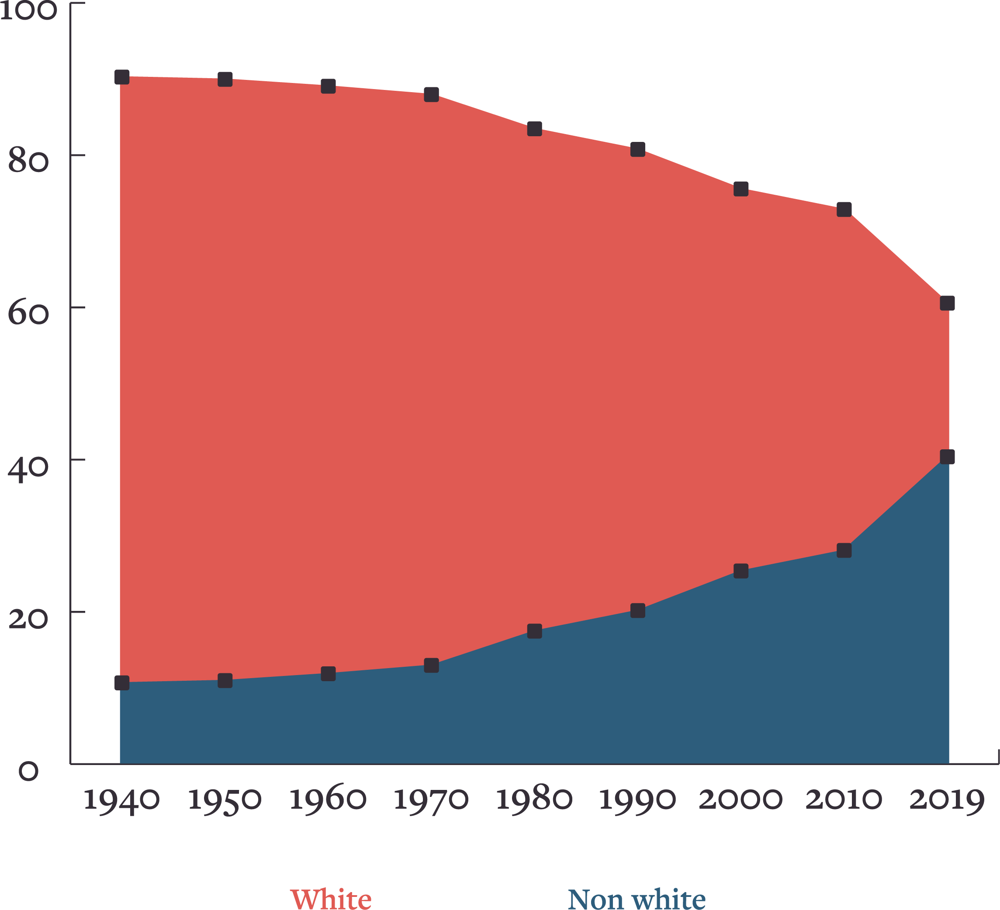
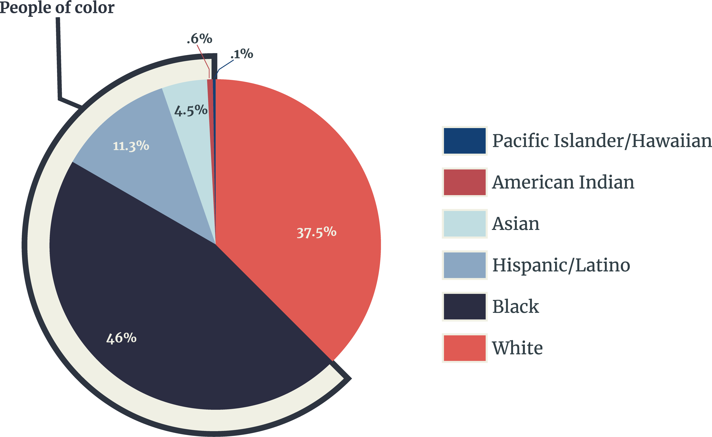
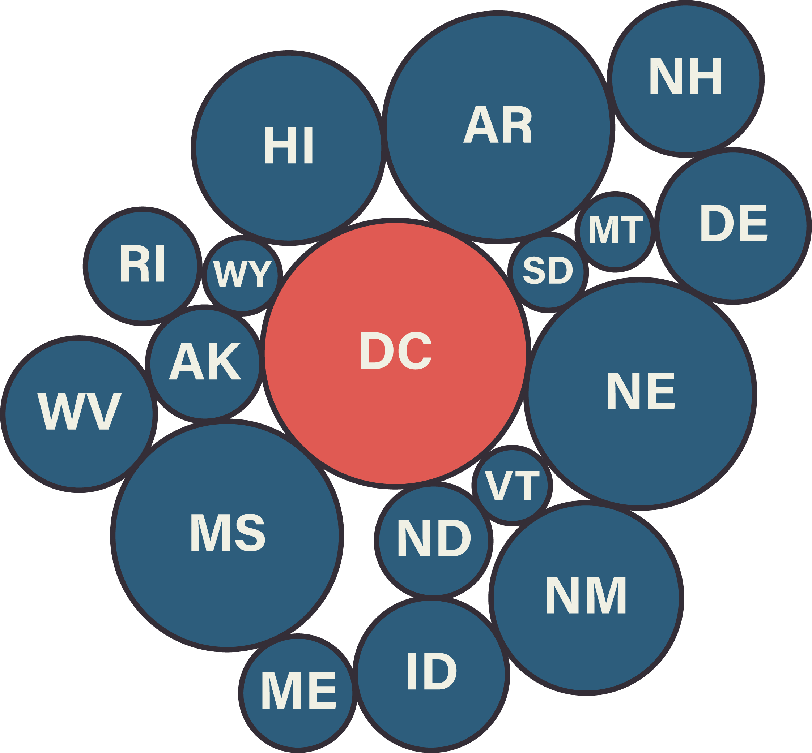
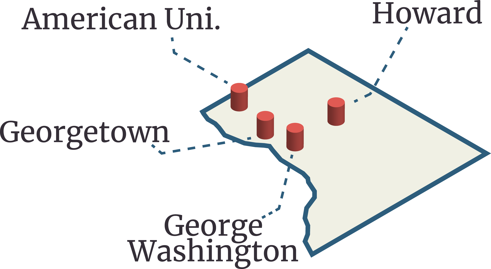

The population of DC has exploded over recent years to 705,749 people!

That's a larger population than two states!
Inspite of having more people, both Wyoming and Vermont have more representation in the senate than DC.

Racial demographics are changing very quickly in this country and a place like Washington DC is becoming a better example of what the rest of the US looks like.
Current percentages of White Americans living in these regions.

There's a tremendous amount of diversity.

According to the Bureau of Economic Analysis, as of Q4 2019, Washington DC contributes $148.2 billion to the GDP of the United States. That’s a higher contribution than 17 states.
 The average Washington DC resident contributes more in Federal Taxes than any other resident of any state. And even with this amount of taxation, the people of DC are not allowed Senate representation!
The average Washington DC resident contributes more in Federal Taxes than any other resident of any state. And even with this amount of taxation, the people of DC are not allowed Senate representation!

DC is home to 19 universities; including 4 prestigious institutions that are internationally recognized.
The largest library in the world is located in DC. With over 34.5 million books and over 151 million items.